릴스 · 작업 영상
남양주 진접 타이어게러지모터스의 실제 작업 영상입니다. 타스만·PV5·렉스턴 스포츠·랭글러 리프트업, 오버휀다·구조변경, AT·MT 오프로드 타이어, 3D 얼라인먼트 작업을 영상과 글로 정리했습니다.
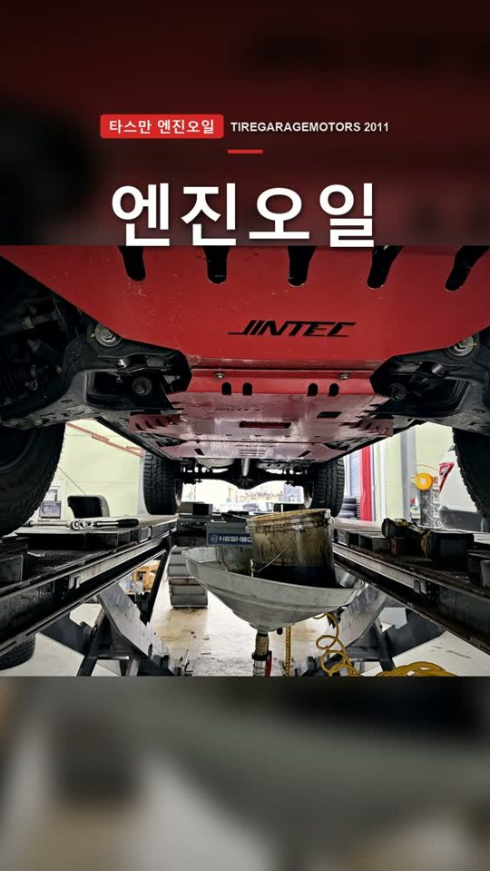
타스만 엔진오일 교환 순서, 언더커버 그대로 폐유 끝까지 필터까지
타스만 엔진오일, 이렇게 갈아요. · 언더커버 단 채로 아래에서 바로 갈았습니다. · 언더커버는 그대로 두고 가운데 구멍으로 작업해요.

랭글러 JL · 35인치 2인치 리프트업, 8가지 풀튜닝
랭글러 JL 35인치 풀튜닝, 8가지를 한 번에 바꿨습니다 · 2인치 리프트업에서 시작해 구조변경으로 끝냈습니다. · 2인치 리프트업 (폭스 + 빅풋 + 트랙바)
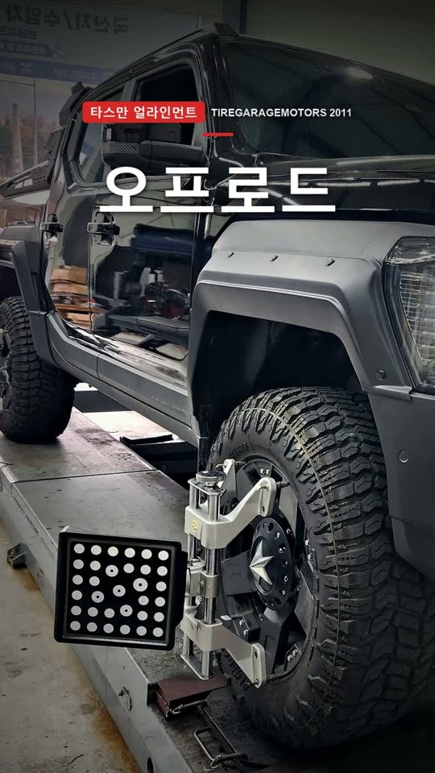
타스만 X-PRO 4륜 얼라인먼트, 머드 타이어 세팅 후 앞뒤 각도 맞추기
타스만에 오프로드 타이어 끼우셨죠? 얼라인먼트는 주기적으로 꼭 점검하세요. · 머드 타이어에 오버휀다까지 한 타스만 X-PRO, 네 바퀴 각도를 전부 다시 쟀습니다. · 3D 얼라인먼트로 네 바퀴를 한 번에 잽니다. 타이어가 커지면 바퀴 각도도 같이 틀어져요.

렉스턴스포츠 칸 · 슈퍼비 V1 오버휀다, 구변까지 3단계
렉스턴스포츠 · 무쏘스포츠 차주님, 오버휀다 달고 구변 되는 방법 · 칸에 슈퍼비 V1을 구변 가능한 고정 방식으로 달았습니다. · 구변 가능한 고정 방식

램 픽업 · 35인치 맞춤 오버휀다, 승인부터 검사까지 3단계
램 픽업에 35인치, 구조변경 되나요? · 맞춤 오버휀다로 승인부터 검사까지 끝냈습니다. · 적재 세팅
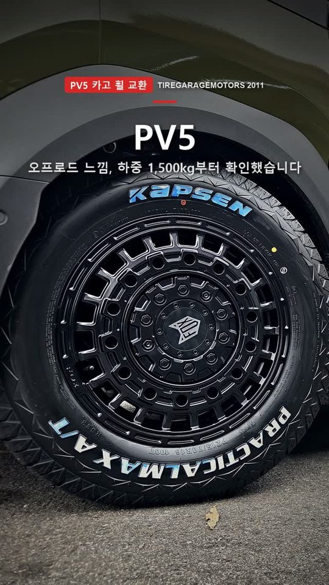
PV5 카고 휠 교환 · AT 타이어 장착, 영국 FOX 16인치 + 215/70R16
PV5 카고, 휠 교환 · AT 타이어 장착했습니다. 하중 1,500kg부터 확인했습니다. · 순정 휠커버를 떼고 영국 FOX 정품 휠로 교환, AT 타이어를 장착한 PV5 카고입니다. 차는 그대로, 휠 · 타이어만 바꿨습니다. · FOX 정품 휠 - 1996년부터 이어온 영국 휠 브랜드. 16인치 무…

코란도스포츠 · 리프트업 슈퍼비 오버휀다, 3단계 구변까지
코란도스포츠도 슈퍼비 오버휀다 들어갈까요? · 들어갑니다. 리프트업하고 부스터 XD 휠까지 달았습니다. · 빅풋 스프링 + 가브리엘 쇼바

렉스턴스포츠 칸 · 리프트업 바디업, 5가지만 바꿨습니다
렉스턴스포츠 · 무쏘스포츠 차주님, 칸 5가지만 바꿨습니다 · 리프트업 · 바디업 · 휠타이어 · 오버휀다 · 구조변경, 한 번에 끝냈습니다. · 빅풋 스프링 + 가브리엘 쇼바 앞뒤

글래디에이터 · 바퀴 돌출 단속, 오버휀다 폭 구변 3단계
글래디에이터 바퀴 돌출로 단속됐다면? · 오버휀다 + 폭 구조변경으로 시정까지 해결했습니다. · 오버휀다로 돌출 정리

렉스턴스포츠 · 휠 돌출 슈퍼비 오버휀다, 폭 구조변경 3단계
렉스턴스포츠 · 무쏘스포츠 차주님, 휠 돌출 그냥 타고 계신가요? · 슈퍼비 오버휀다로 정리하고 폭 구조변경까지 진행했습니다. · 슈퍼비 오버휀다 장착

콜로라도 · 17인치 BF T/A 오버휀다, 구조변경 3단계
콜로라도에 17인치 + BF T/A, 검사는요? · 오버휀다로 라인 맞추고 제원 측정 후 구조변경했습니다. · 옵셋 맞춘 17인치 타쿠마 휠
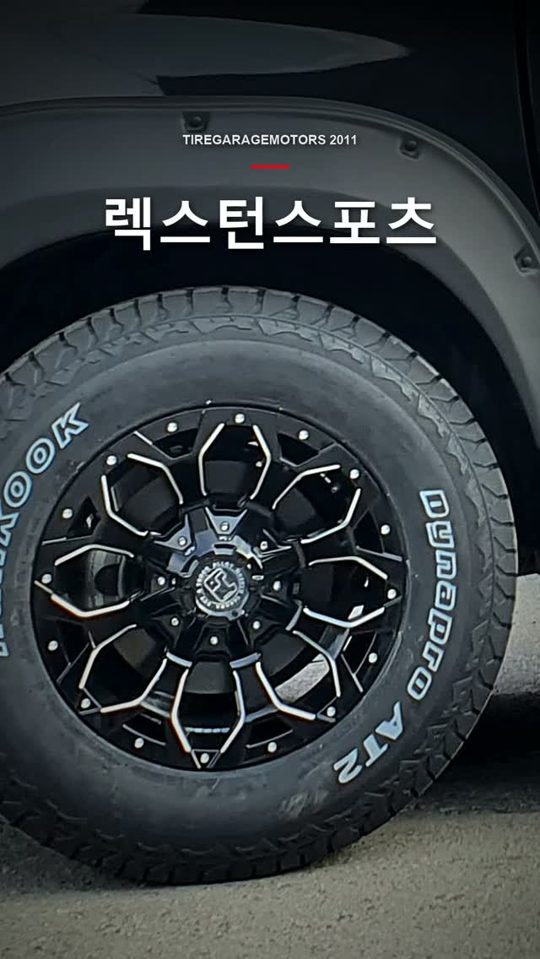
렉스턴스포츠 · 32인치 리프트업, 3단계로 오버휀다 구변까지
렉스턴스포츠 · 무쏘스포츠 차주님, 32인치는 이 3단계면 됩니다 · 리어 스프링, 레트럴바, 오버휀다. 구조변경까지 마무리했습니다. · 리어 스프링 교체

PV5 휠 · 짐 싣는 차라면 하중부터, 영국 FOX 정품 ADV 16인치 1,500kg
PV5 휠, 짐 많이 싣는 차라면 바꿔도 될까요? · 디자인보다 하중부터 확인했습니다. 영국 FOX 정품 ADV 16인치, 4본 세트 매장에 들어왔습니다. · FOX 정품 휠 - 1996년부터 이어온 영국 휠 브랜드, 정품 박스 그대로 입고
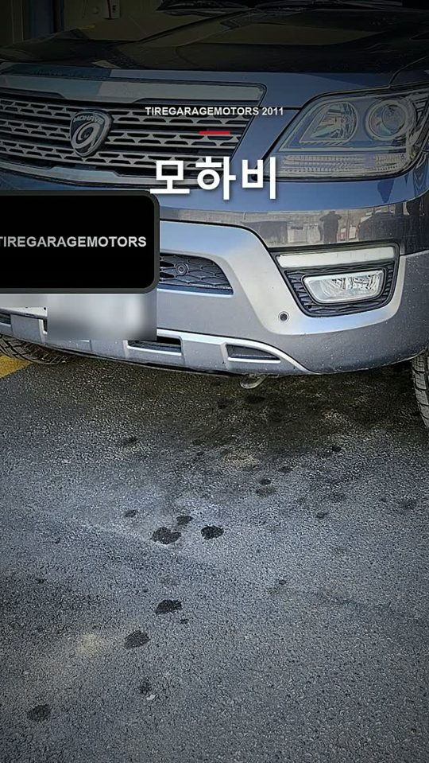
모하비 · 리프트업 바디업, 높이 넓이 구조변경 3단계
리프트업 · 바디업 모하비, 검사 앞두고 뭐부터 할까요? · 높이 · 넓이 측정부터입니다. 검사 시기에 맞춰 구조변경까지 진행했습니다. · 리프트업 + 바디업 + 휠타이어 차량
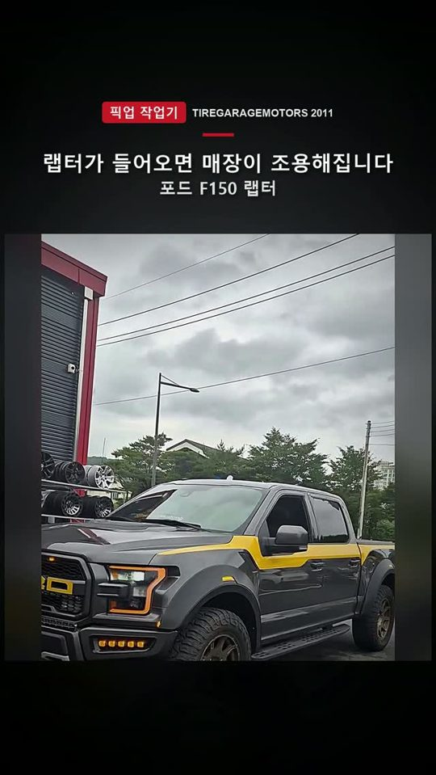
F150 랩터 입고, 6톤 리프트에서 타이어 · 정비 · 튜닝
F150 랩터 입고, 6톤 리프트에 올리면 매장이 조용해집니다 · 큰 차는 큰 장비로 작업합니다. · 포드 F150 랩터
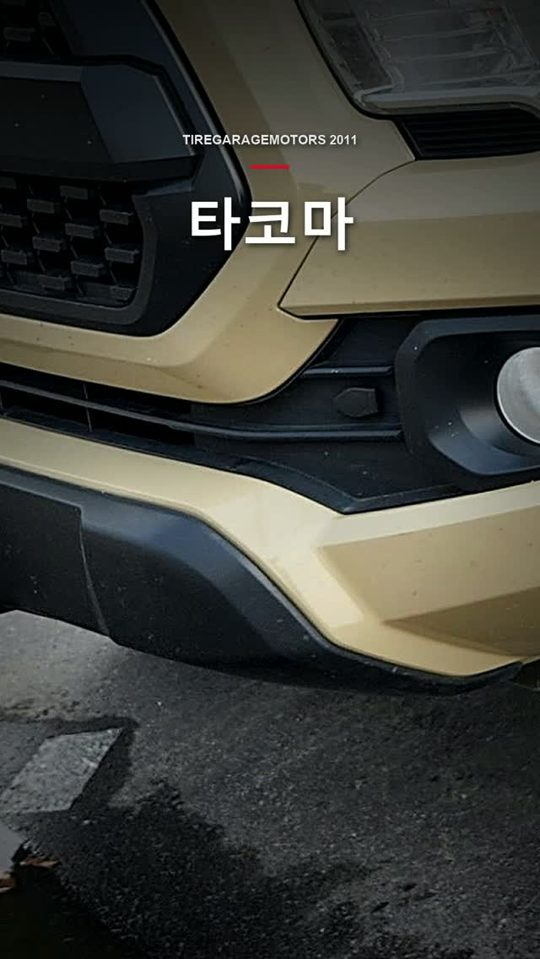
타코마 · 병행수입 리프트업 오버휀다, 높이 구조변경 3단계
병행수입 타코마 리프트업 + 오버휀다, 검사는 어떻게? · 높이 구조변경까지 진행해서 해결했습니다. · 해외 공수 리프트업 키트 장착
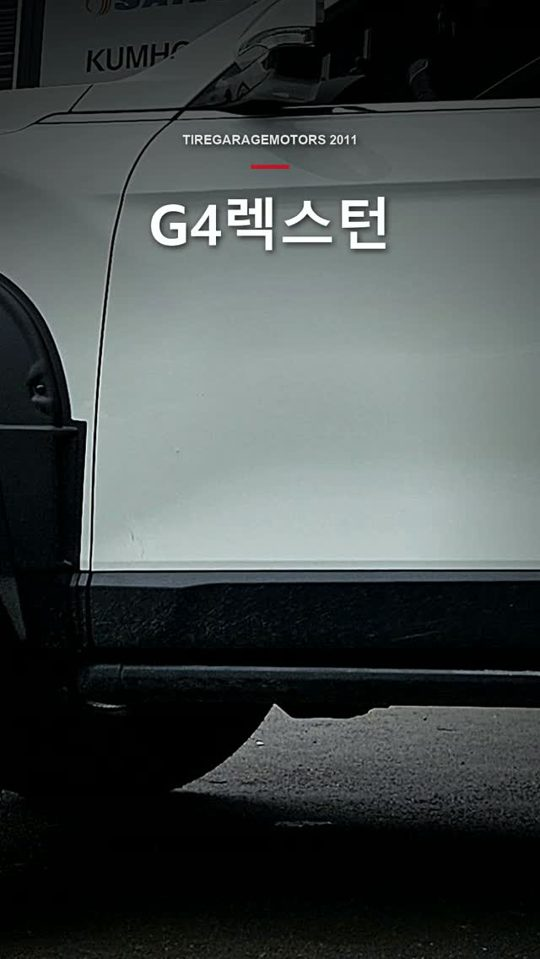
G4렉스턴 · 33인치 바디업 50mm, 3단계로 구조변경까지
G4렉스턴 차주님, 33인치에 바디업 50mm면 어떻게 될까요? · 바디업 50mm에 리프트업까지 더해 33인치로 세팅하고, 구조변경까지 끝냈습니다. · 빅풋 리프트업 + 가브리엘 쇼바
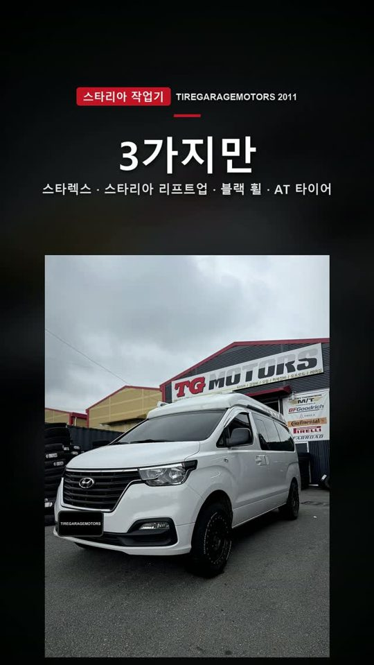
스타리아 3가지만 바꿨습니다, 빅풋 스프링 · 블랙 휠 · AT
스타렉스 · 스타리아, 3가지만 바꿨습니다. · 리프트업 - 빅풋 스프링 · AT 타이어 - 올터레인 패턴

타스만 · 콜로라도 3가지만 바꿨습니다, 리프트업 · 스페이서 · AT
타스만 · 콜로라도, 3가지만 바꿨습니다. · 리프트업 - 스프링 · 휠 · 스페이서 - 트랙을 넓혀 꽉 찬 자세
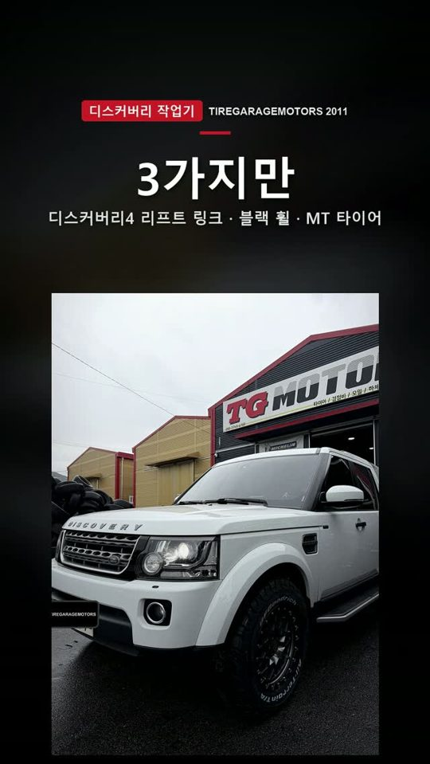
디스커버리4 3가지만 바꿨습니다, 리프트 링크 · 블랙 휠 · MT
디스커버리4, 3가지만 바꿨습니다. · 리프트 링크 - 에어서스 차고 업, 장착 뒤 얼라인먼트 · MT · AT 타이어

렉스턴스포츠 3가지만 바꿨습니다, 리프트업 · AT · 스키드
렉스턴스포츠 · 무쏘스포츠 차주님, 3가지만 바꿨습니다. · 리프트업 - 가브리엘 쇼바 · 스프링, 코일오버 · 휠 · AT 타이어 - 블랙 휠 + 올터레인

무쏘 3가지만 바꿨습니다, 리프트업 · 오버펜더 · MT
렉스턴스포츠 · 무쏘스포츠 차주님, 3가지만 바꿨습니다. · 리프트업 - 스프링 · 쇼크 교체, 장착 뒤 얼라인먼트 · 오버펜더 - 휠하우스를 넓혀 큰 타이어도 여유 있게

PV5 3가지만 바꿨습니다, 리프트업 · 휠 · AT
PV5, 3가지만 바꿨습니다. · 리프트업 - 스프링 교체로 차고 업, 장착 뒤 얼라인먼트 · 휠 - PV5 사이즈 · 옵셋에 맞는 휠
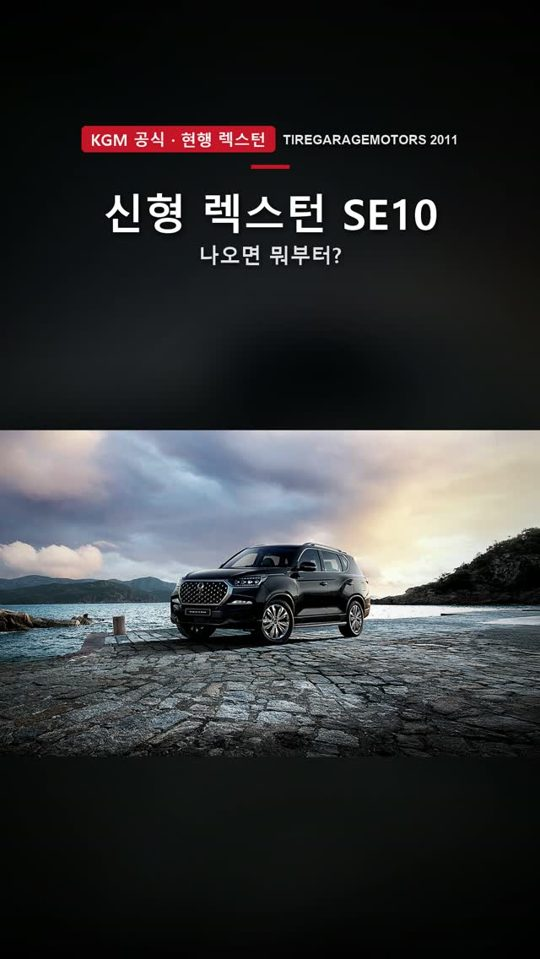
신형 렉스턴 SE10 나오면 뭐부터? 렉스턴·무쏘 오프로드 세팅
신형 렉스턴(SE10), 나오면 뭐부터 하실 건가요? · 11월 환경부 인증을 마쳤고 이름은 '렉스턴' 그대로입니다. · 플러그인 하이브리드 · 5인승 / 7인승, 출시는 2027년 초로 보도됐습니다. (언론 보도 기준, KGM 공식 발표 전)
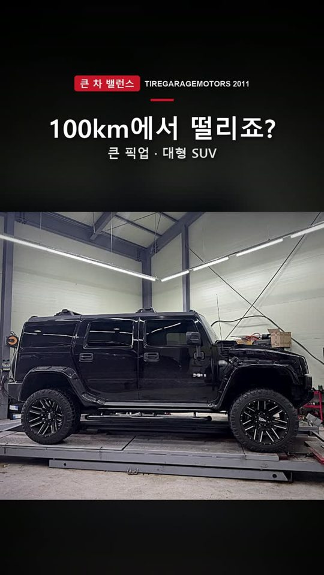
큰 픽업·대형 SUV 23종 핸들 떨림, 밸런스로 잡았습니다
100km에서 떨리는데 잡는 곳 없으셨죠? · 큰 타이어는 무거워서 조금만 틀어져도 떨림이 큽니다. · 고속 밸런서로 OK 뜰 때까지 잡고, 시운전으로 떨림 없어진 것까지 보고 출고합니다.
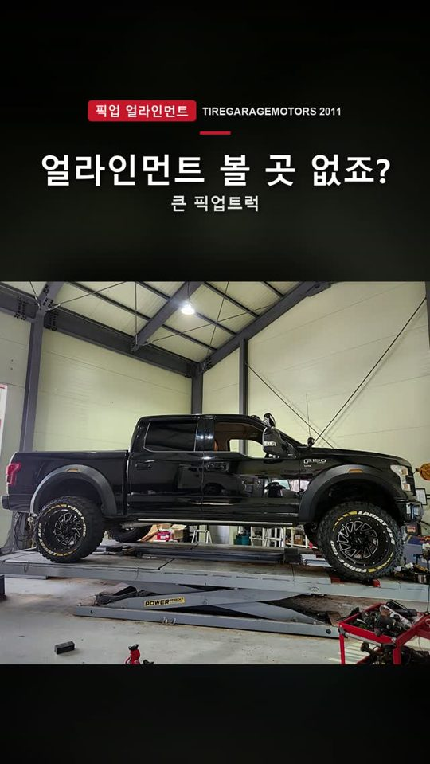
큰 픽업 얼라인먼트 27대, F150부터 G바겐까지
얼라인먼트 볼 곳 없어서 헤매셨죠? · 큰 픽업 · 대형 SUV도 바로 리프트에 올려 3D로 맞춥니다. · F150(랩터 SVT · FX4 · 37인치 RT) · 램 1500 레블 · 툰드라 · 허머 H2 · 사이버트럭 · 레인저 랩터 · 콜로라도 · 타스만 · 무쏘
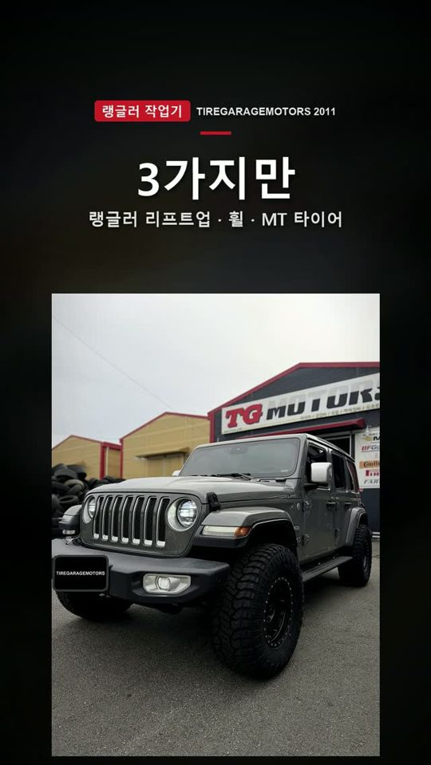
랭글러 3가지만 바꿨습니다, 리프트업 · 비드락 휠 · MT
랭글러, 3가지만 바꿨습니다. · 리프트업 - FOX 쇼바 · 스프링, 장착 뒤 얼라인먼트 · 휠 - 비드락 휠 · 블랙 휠
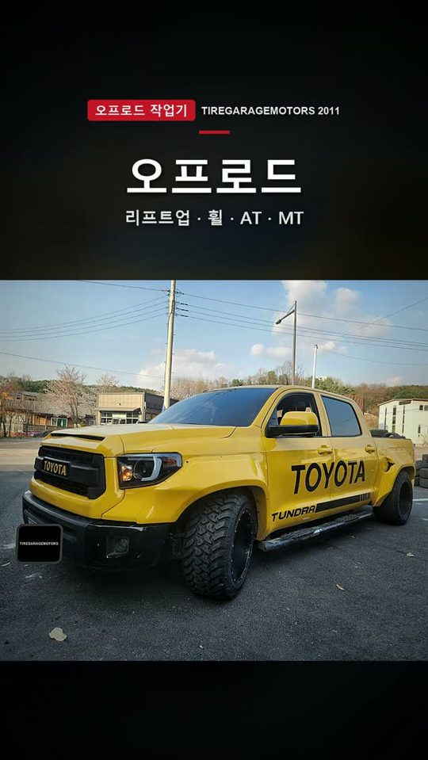
툰드라 · 브롱코 · 랭글러 오프로드 세팅 5대
이 다섯 대 전부 저희가 작업했습니다. · 툰드라 - MT 타이어 + 휠 · 브롱코 - 리프트업 + AT 타이어
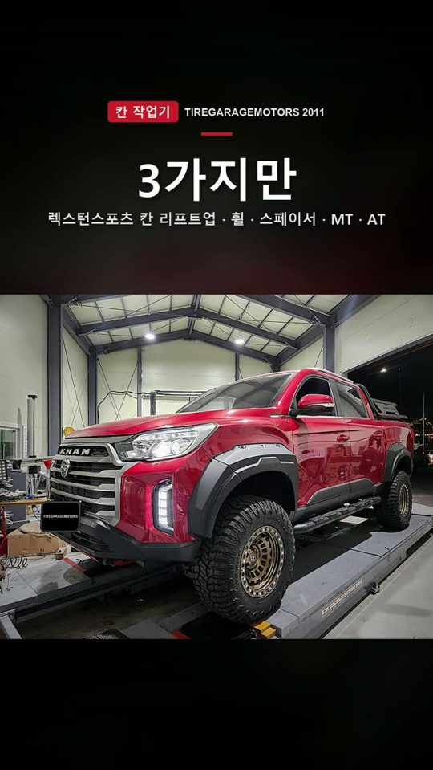
렉스턴스포츠 칸 3가지만 바꿨습니다, 리프트업 · 휠 · MT
렉스턴스포츠 · 무쏘스포츠 차주님, 칸 3가지만 바꿨습니다. · 리프트업 - 스프링 · 쇼바, 장착 뒤 얼라인먼트 · 휠 · 스페이서 - 블랙 휠 · 오프로드 휠, 트랙을 넓혀 꽉 찬 자세
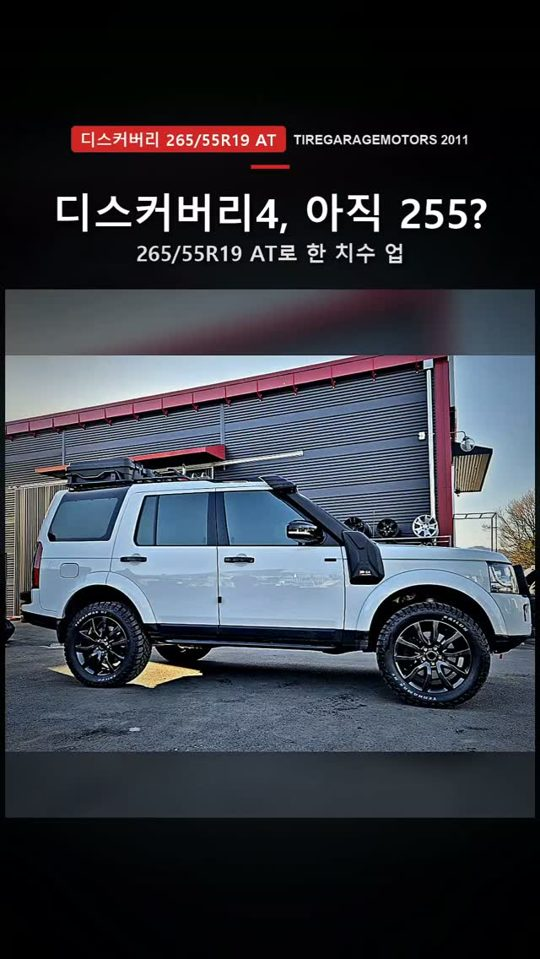
디스커버리4 265/55R19 AT 한 치수 업 · 리프트업 · 허브스페이스
디스커버리4 차주님, 아직 순정 255/55R19 그대로 타고 계세요? · 같은 휠에 265/55R19 AT로 한 치수 올리고, 간섭 정리부터 얼라인먼트까지 한 번에 끝냅니다. · 출퇴근은 조용하게, 주말 캠핑 · 오프로드는 든든하게.
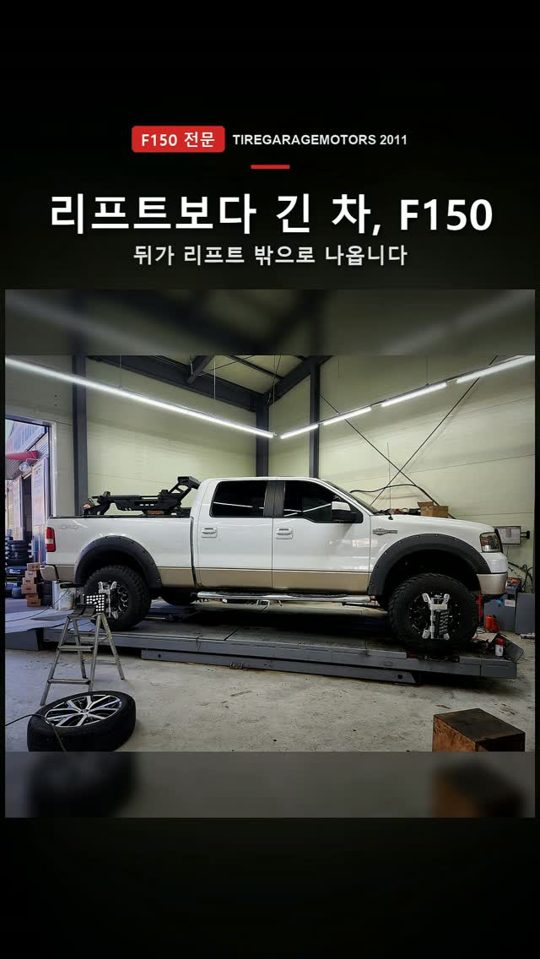
F150 하체 수리 · 3D 얼라인먼트 · 특이 사이즈 타이어
F150 차주님, 하체 · 얼라인먼트 · 타이어 어디서 보세요? · 리프트보다 긴 차라서 아무 데서나 못 봅니다. F150 · 랩터 전문으로 2017년부터 작업하고 있습니다. · 하체 수리 - 부식된 어퍼암 · 로어암 · 타이로드 교체 (랩터 포함)
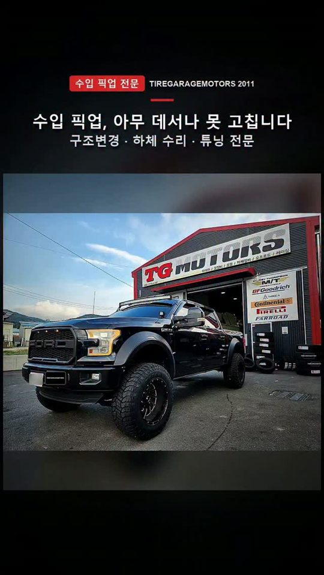
수입 픽업 구조변경 · 하체 수리 · 튜닝
수입 픽업 구조변경 · 하체 수리 · 튜닝, 아무 데서나 못 합니다. · F150 · 램1500 · GMC 시에라 · 글래디에이터 · 툰드라 · 콜로라도 · 레인저 작업 기록입니다. · 하체 수리 - 부식된 어퍼암 · 로어암 · 타이로드 교체, 유격 정리
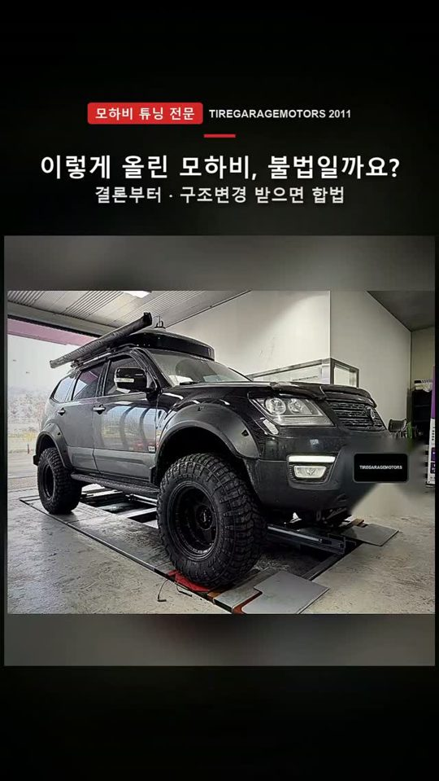
이렇게 올린 모하비, 불법일까? 튜닝부터 구조변경까지 7단계
이렇게 올린 모하비, 불법일까요? 결론부터 말씀드리면, 구조변경 승인을 받으면 합법입니다. · 모하비 튜닝을 어디서부터 어디까지 하는지 순서대로 정리했습니다. · 빅풋 스프링 리프트업 - 차고를 올리는 첫 단계입니다
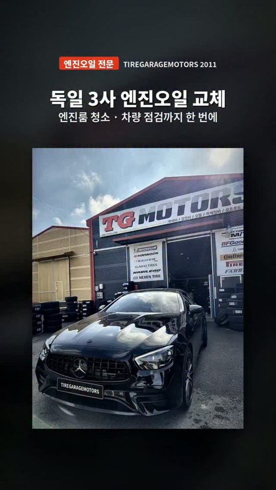
벤츠 · BMW · 아우디 엔진오일 교체, 엔진룸 청소와 점검까지
독일 3사 엔진오일 교체, 엔진룸 청소와 차량 점검까지 한 번에 · 벤츠 · BMW · 아우디 엔진오일 전문 · 순정 규격 엔진오일 - MB 229.52 승인 5W-30
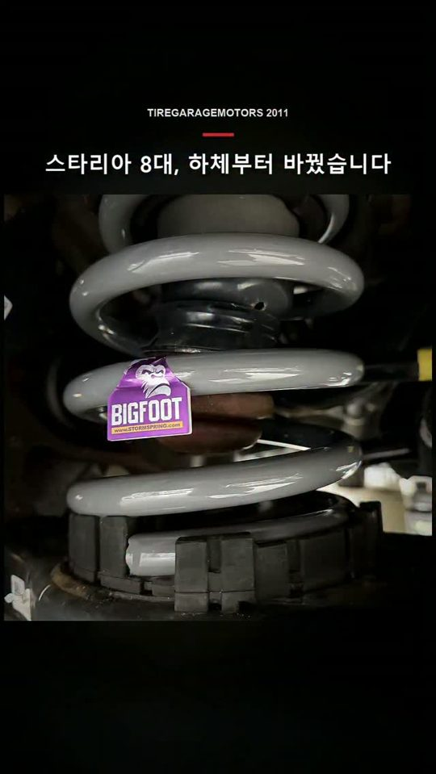
스타리아 하체 튜닝 8대 모음, 스프링 · 휠 · 브레이크 · 타이어
스타리아 , 하체부터 바꿨습니다. · EV 스타리아 · 뒤 빅풋 스프링 보강 · 스타리아 캠핑 · 빅풋 스프링 리프트업
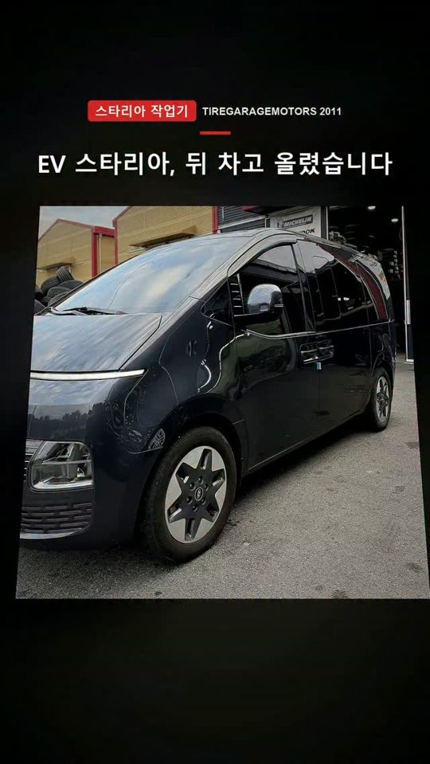
EV 스타리아 뒤 차고 리프트업, 빅풋 스프링 작업 전후 비교
EV 스타리아, 뒤 차고 올렸습니다. · 작업 전 · 순정 차고 확인 · 뒤 · 빅풋 스프링 보강
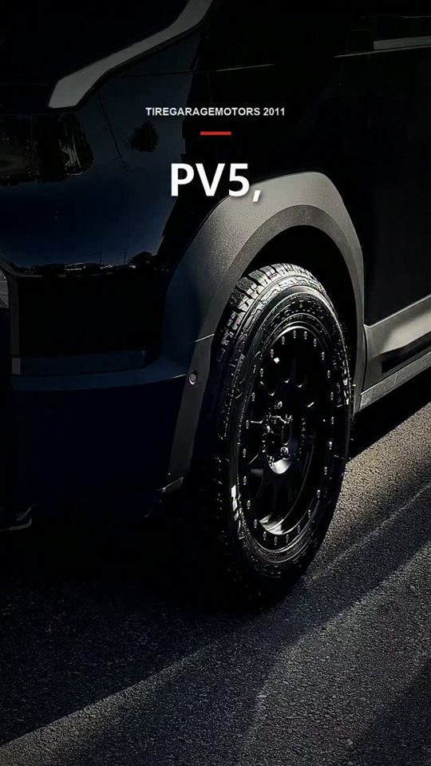
PV5 리프트업 · METHOD 16인치 휠 · AT 타이어, 3가지만 바꿨습니다
PV5, 3가지만 바꿨습니다. · 리프트업 · 빅풋 스프링 앞 · 뒤 · 휠 · METHOD 16인치
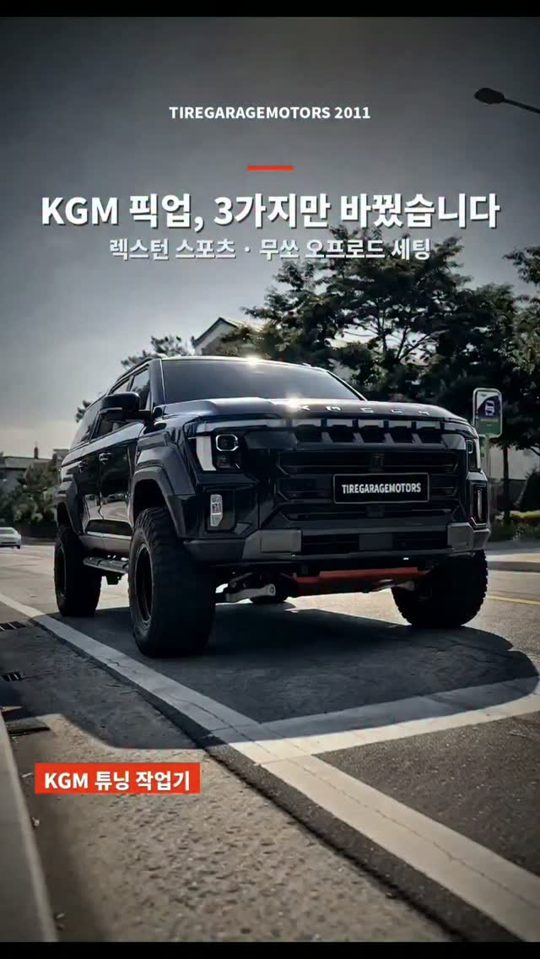
KGM 픽업, 딱 3가지만 바꿨습니다.
KGM 신차 출고부터 튜닝까지 한 번에 · KGM 튜닝 작업기 - 렉스턴 스포츠 · 무쏘 · 리프트업: 높아진 차고 + 오버휀다

PV5 카고·패신저 100대째 리프트업. 빅풋 스프링 + METHOD 16인치 + AT 타이어, 남양주 진접에서 하루 만에…
순정 PV5 입고 · 빅풋 리프트 스프링으로 앞·뒤 차고 UP · METHOD 16인치 휠 + 오프로드 타이어 (레이다 · 한국 RF12 · 캡센 중 선택)

PV5에 리프트업을 하면?
지금까지 떼어낸 순정 스프링만 이만큼 쌓였습니다. · 수많은 리프트업 스프링 교체 경험으로, PV5는 확실하게 압니다. · 빅풋 리프트 스프링으로 앞 · 뒤 차고 UP
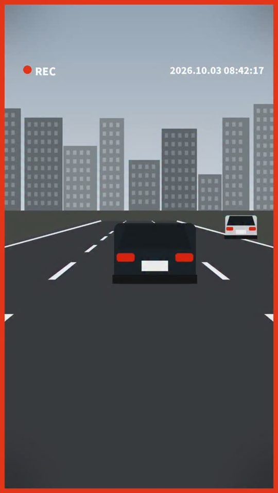
운전 오래 하신 분들도 무심코 하는 행동, 이것도 단속 대상입니다.
운전자라면 꼭 알아야 할 체크 4가지 정리해 드립니다. · CHECK 01. 차선 변경할 때 방향지시등 · 차가 없어도, 잠깐이어도 깜빡이는 기본입니다.
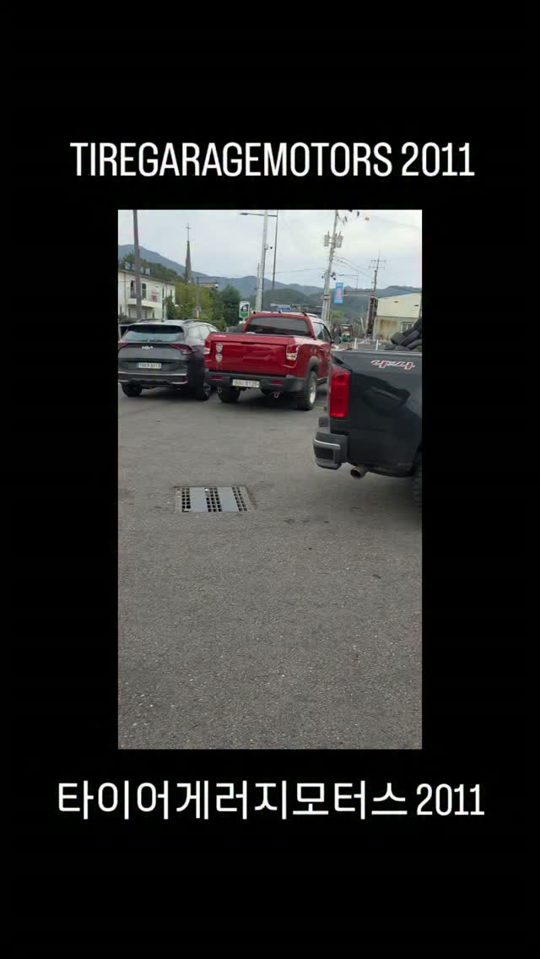
오늘도 찾아주신 고객님들 감사합니다.
타이어 교체부터 엔진오일, 하체 정비와 수리, 3D 얼라이먼트까지 꼼꼼하게 작업합니다. · 일반 승용차부터 SUV, 픽업트럭, 캠핑카까지. · 차량의 용도에 맞춘 튜닝과 리프트업, 구조변경도 한 곳에서 상담하세요.
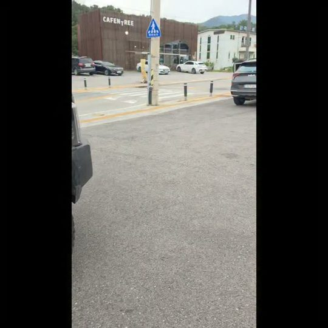
오늘도 다양한 차량과 고객님들이 찾아주셨습니다.
타이어 교체부터 엔진오일, 하체 정비와 수리, · 3D 얼라이먼트까지 꼼꼼하게 작업하고 있습니다. · 차량의 스타일과 용도에 맞춘 튜닝은 물론
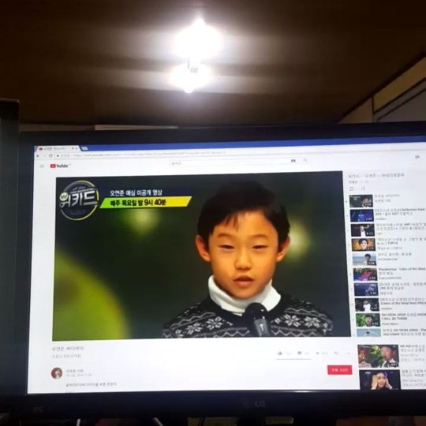
이렇게 편하고 ..
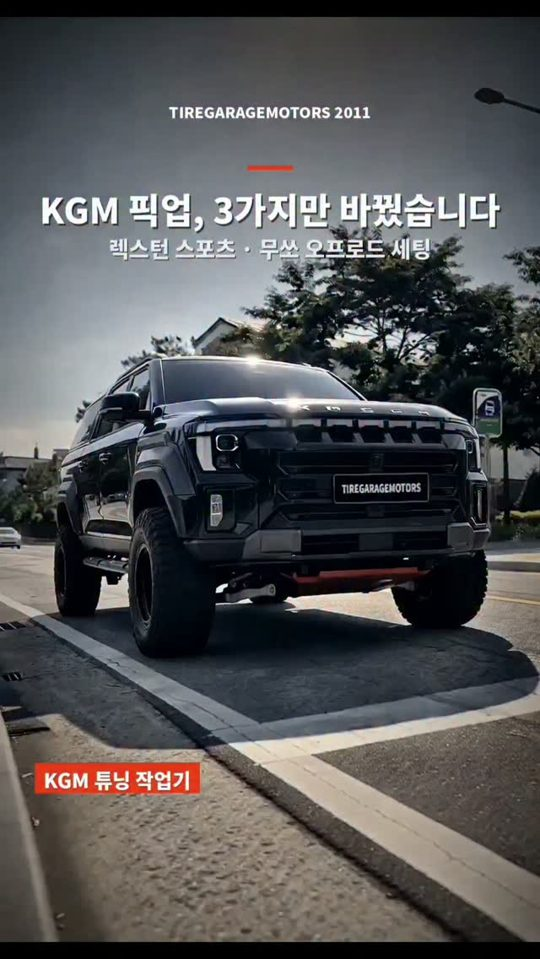
KGM 픽업, 딱 3가지만 바꿨습니다.
KGM 신차 출고부터 튜닝까지 한 번에 · KGM 튜닝 작업기 - 렉스턴 스포츠 · 무쏘 · 리프트업: 높아진 차고 + 오버휀다

PV5 카고·패신저 100대째 리프트업. 빅풋 스프링 + METHOD 16인치 + AT 타이어, 남양주 진접에서 하루 만에…
순정 PV5 입고 · 빅풋 리프트 스프링으로 앞·뒤 차고 UP · METHOD 16인치 휠 + 오프로드 타이어 (레이다 · 한국 RF12 · 캡센 중 선택)
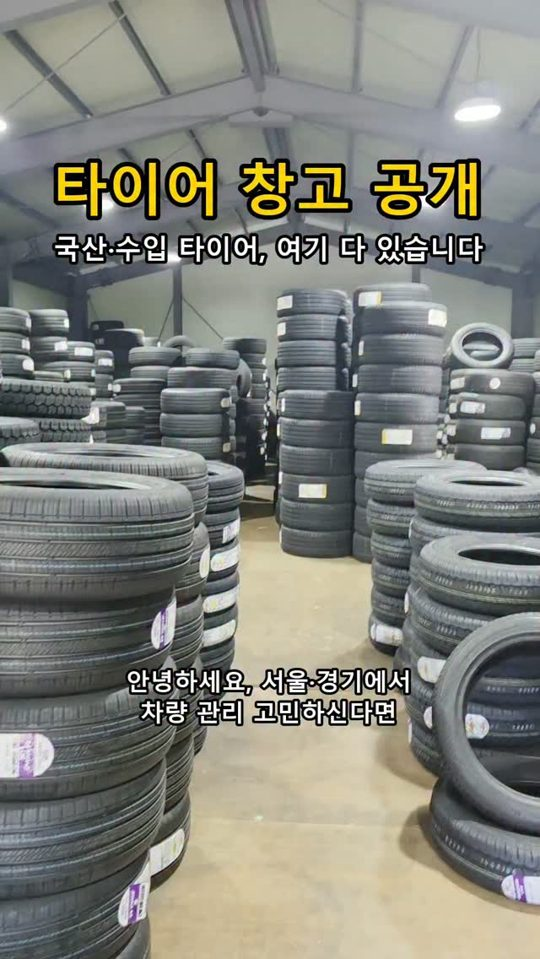
▷ 637타이어 하나 바꾸러 왔다가, 정비까지 한 번에 끝내고 갑니다.
넓은 창고에 국산·수입 타이어를 직접 보유하고 있어 사이즈 걱정 없이 바로 장착 가능합니다. · 수입 타이어: 미쉐린 · 피렐리 · 콘티넨탈 · 국산 타이어: 한국 · 금호 · 넥센
타이어 하나 바꾸러 왔다가, 정비까지 한 번에 끝내고 갑니다.
넓은 창고에 국산·수입 타이어를 직접 보유하고 있어 사이즈 걱정 없이 바로 장착 가능합니다. · 수입 타이어: 미쉐린 · 피렐리 · 콘티넨탈 · 국산 타이어: 한국 · 금호 · 넥센
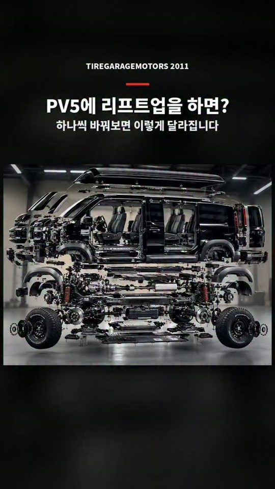
▷ 5727PV5에 리프트업을 하면?
지금까지 떼어낸 순정 스프링만 이만큼 쌓였습니다. · 수많은 리프트업 스프링 교체 경험으로, PV5는 확실하게 압니다. · 빅풋 리프트 스프링으로 앞 · 뒤 차고 UP
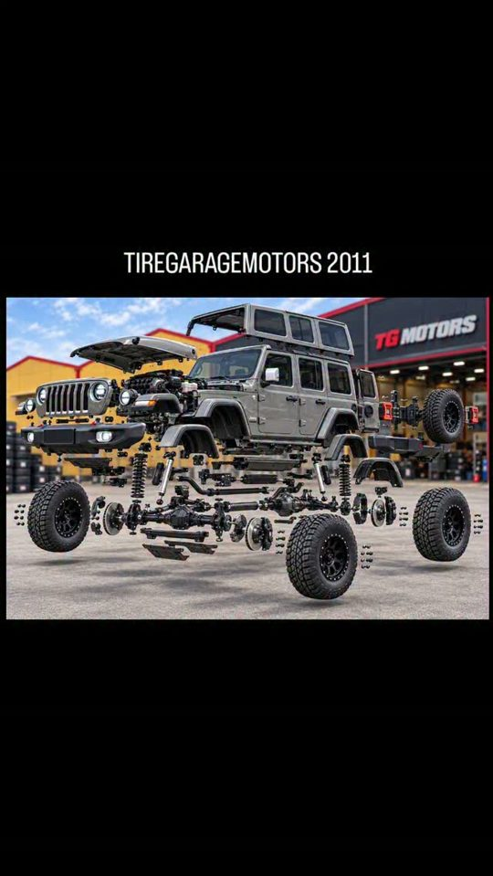
▷ 628여러분은 내 차를 보면서 어떤 모습을 꿈꿔보셨나요?
조금 더 높게, 조금 더 멋있게. · 큰 타이어도 끼워보고 싶고, · 나만의 스타일로 하나씩 바꿔보고 싶고.
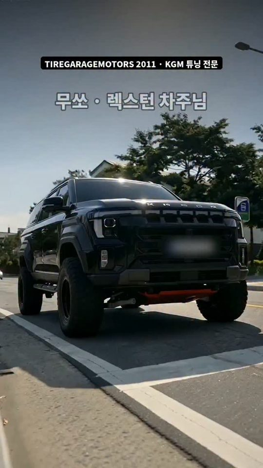
▷ 1.1만무쏘 · 렉스턴 차주님, 순정 그대로 타실 건가요?
KGM 픽업 리프트업 하부 풀패키지 작업입니다. · 보이는 자세만 올리는 게 아니라, 리프트업 이후 하부 세팅과 보호까지 한 번에 끝냈습니다. · 리프트업 - 리프트 스프링 + 가브리엘 울트라 쇼바
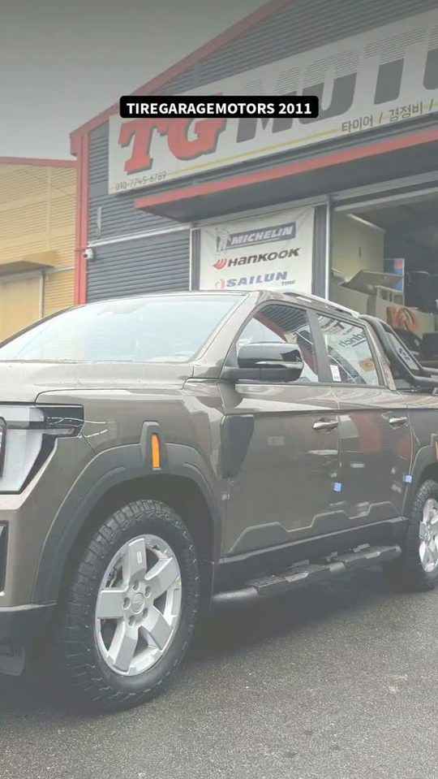
▷ 772내 차 서스펜션, 어떤 방식인지 알고 계신가요?
서스펜션은 노면 충격을 흡수하고 타이어가 땅을 잘 잡도록 도와 승차감과 주행 안정성을 만들어 주는 장치입니다. · 대표적인 서스펜션 8가지를 한 번에 정리했습니다. · 일체식(리지드 액슬)
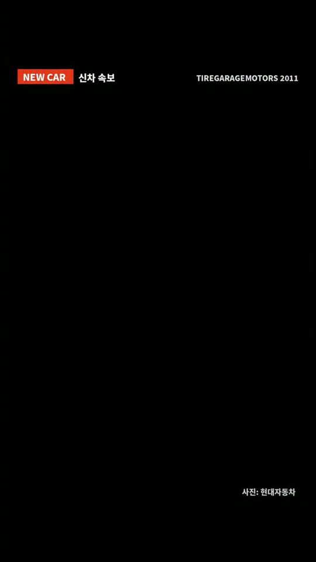
▷ 13406년 만에 완전히 바뀐 투싼, 5세대 '디 올 뉴 투싼' 공개
오늘은 신차 정보를 갖고 왔습니다. · 국산 SUV 최초로 글로벌 누적 판매 1,000만 대를 넘긴 투싼. · 2004년 1세대 이후 22년 만이고, 5년 연속 현대차 판매 1위 모델이 완전변경으로 돌아왔습니다.
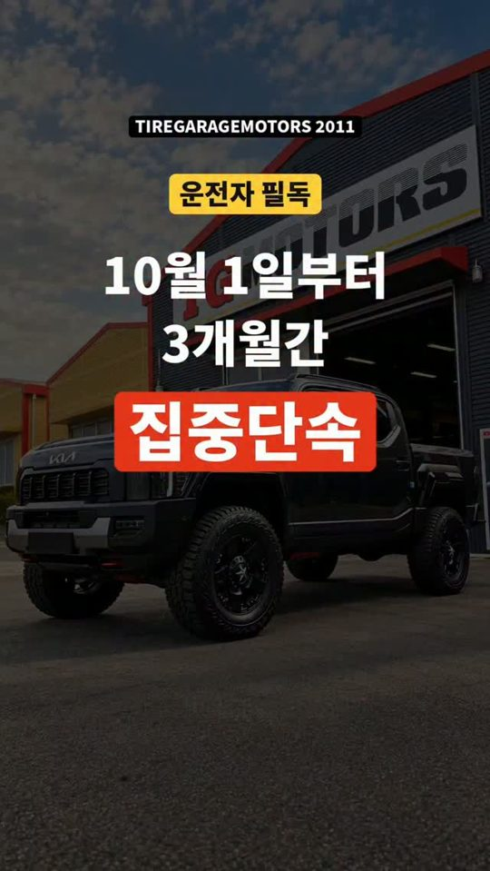
▷ 127610월 1일부터 3개월간 집중단속, 운전자라면 꼭 확인하세요.
경찰은 10월 1일부터 12월 31일까지 기본 교통법규 위반에 대한 집중단속을 실시합니다. · 주요 단속 대상 · 좌석 안전띠 미착용
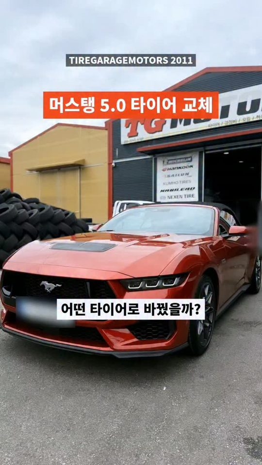
▷ 888머스탱 5.0, 어떤 타이어로 바꿨을까?
포드 머스탱 5.0 타이어 교체 · 기존: 순정 타이어 (앞 255/40 R19, 뒤 275/40 R19) · 교체: 콘티넨탈 익스트림콘택트 DWS06 PLUS
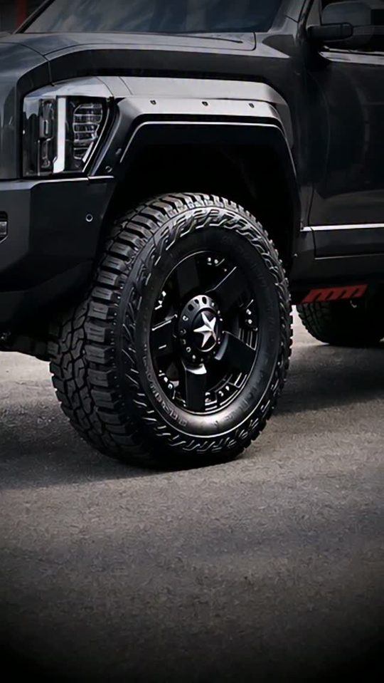
▷ 8500타스만에 35인치를 넣으면?
기아 타스만 2.5인치 리프트업 + 35인치 타이어 장착 · 2.5인치 리프트업 · 한국타이어 다이나프로 XT 35x12.50R18
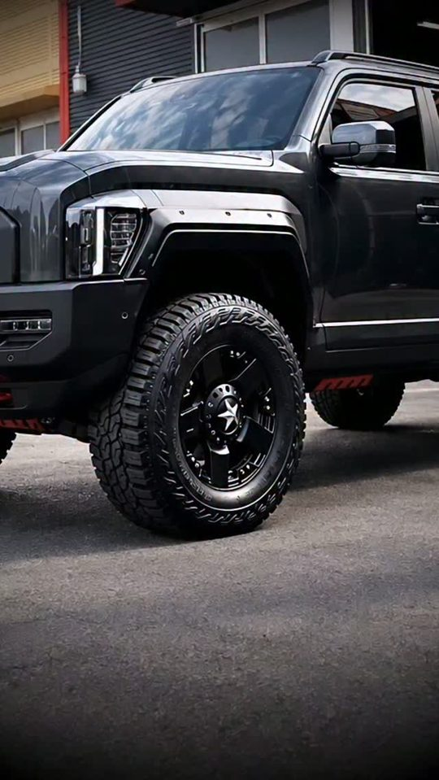
▷ 1943타스만에 35인치, 들어갑니다.
기아 타스만 2.5인치 리프트업 + 35인치 타이어 장착 · 2.5인치 리프트업 · 한국타이어 다이나프로 XT 35x12.50R18
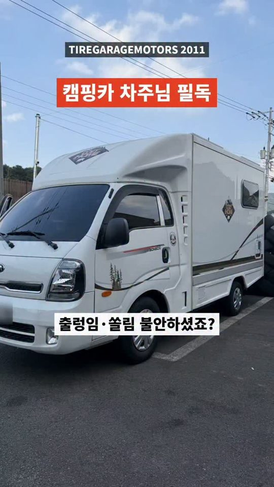
▷ 901캠핑카 차주님, 하체보강 하셨나요?
캠핑 장비에 물·배터리까지 싣고 다니는 캠핑카는 · 순정 쇼바와 스프링으로 버티기 힘듭니다. · 출렁임, 코너 쏠림, 뒤 처짐… 그냥 두면 더 불안해져요.
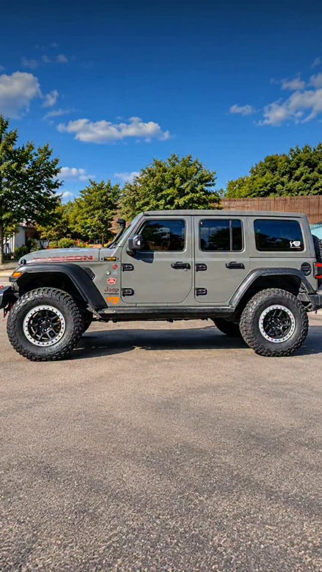
▷ 1.2만순정 랭글러 → 35인치 풀셋업, 차원이 다른 존재감
같은 랭글러, 완전히 다른 차가 됐습니다. · 하체 리프트업부터 35인치 타이어 셋업까지 한 번에 끝냈습니다. · 리프트업 & 서스펜션 셋업
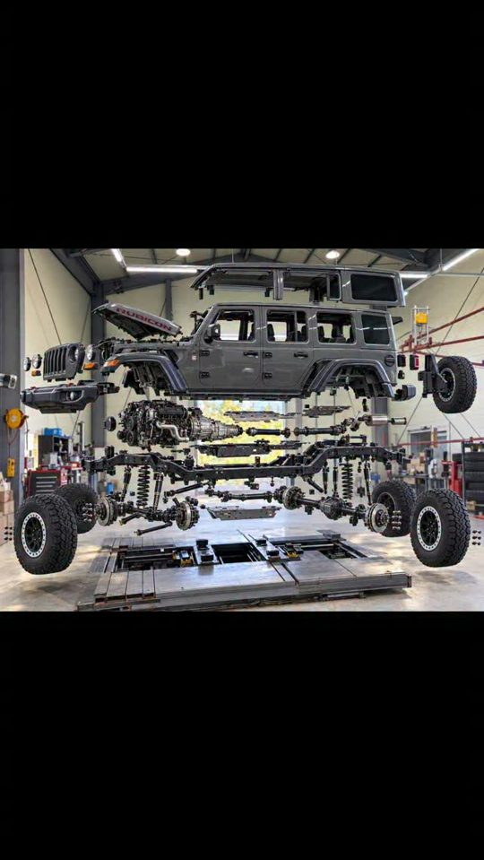
▷ 942랭글러는 타이어와 차체 높이에 따라 옆모습의 느낌이 크게 달라지는 차량입니다. 이번 차량도 오프로드 타이어와 리프트업이 어우…
랭글러 튜닝을 고민 중이시라면 원하시는 타이어 크기와 평소 주행 용도를 말씀해 주세요. 차량에 맞는 작업 방향을 친절하게 안내해 드리겠습니다. 타이어 교체뿐 아니라 3D 얼라이먼트, 엔진오일 교환, 하체 정비도 함께 상담하실 수 있습니다. · 남양주튜닝 진접타이어
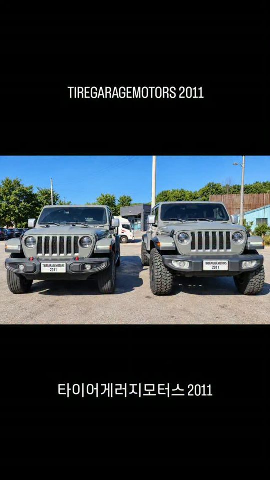
▷ 1.2만랭글러는 샀는데, 튜닝은 어디서부터 시작할지 고민되시죠?
오프로드 타이어부터 오버휀다, 리프트업까지. · 평소 출퇴근과 주말 나들이, 원하시는 스타일과 예산에 맞춰 필요한 작업부터 함께 골라드립니다. · 한 번에 전부 바꾸지 않아도 좋습니다.
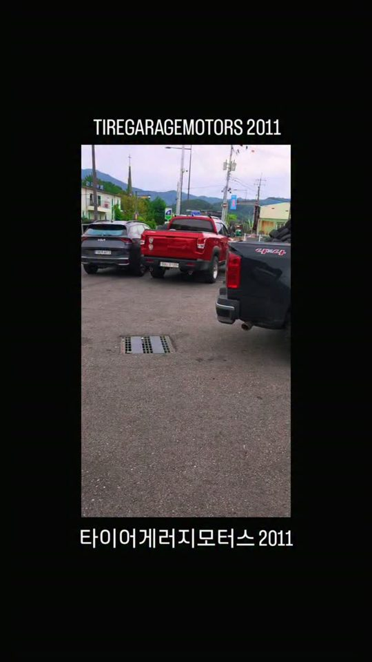
▷ 9776타이어부터 정비, 튜닝까지 한 곳에서.
국산·수입 타이어를 합리적인 가격으로 만나보세요. · 타이어 교체부터 엔진오일, 하체 정비, 3D 얼라이먼트까지 꼼꼼하게 작업합니다. · 높은 층고와 6톤 대형 리프트를 갖춘 작업 공간에서 승용차부터 SUV, 픽업트럭, 캠핑카까지 차량에 맞춰 작업합니다.
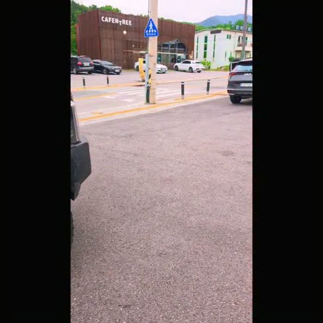
▷ 7960타이어부터 정비, 튜닝까지 한 번에!
국산차·수입차·SUV·픽업트럭·캠핑카 · 타이어 교체부터 엔진오일, 하체 정비, 오프로드 튜닝, 3D 얼라이먼트까지 가능합니다. · 3D얼라이먼트 수입차정비
일반 승용차부터 SUV, 픽업트럭, 오프로드 차량까지
타이어부터 정비·튜닝까지 한 곳에서 해결하세요. · 다양한 오프로드 타이어 사이즈는 물론 · 한국·금호·넥센 등 국산 브랜드부터
모닝, 렉스턴, PV5, BMW, 쏘렌토, 스포티지까지
오늘도 다양한 차량들이 찾아주셨습니다. · 타이어 교체부터 엔진오일, 각종 정비와 튜닝까지. · 차량마다 필요한 작업은 다르지만
PV5 리프트업 세팅부터 빅풋 스프링 장착, AT·RT 타이어 세팅, 휠 인치업까지
차주님의 주행환경에 맞춰 안전하고 깔끔하게 작업해드립니다. · 캠핑용, 업무용, 레저용 어떤 목적이든 PV5의 활용성을 한 단계 높여드립니다. · 휠 밸런스와 얼라이먼트 작업까지 깔끔하게 마무리해드렸습니다.
오늘은 쉐보레 콜로라도 작업입니다.
같은 차량이라도 차주님의 스타일에 따라 완성되는 모습은 달라집니다. · 1호 차량은 허브스페이서 장착으로 휠과 차체의 밸런스를 맞춰 더욱 묵직하고 안정감 있는 자세를 완성했습니다. · 2호 차량은 허브스페이서 장착과 함께 사일룬 테라맥스 RT 275/55R20 타이어를 장착했습니다.
이번 차량은 한국타이어 다이나프로 AT2 225/70R16 장착과 함께 리프트업 작업을 진행했습니다.
순정의 실용성은 그대로 유지하면서 차고를 높여 더욱 안정감 있는 자세와 SUV 감성을 더했습니다. · 캠핑, 차박, 낚시를 즐기시는 분들은 물론, 평범한 PV5가 아닌 나만의 스타일을 완성하고 싶은 30대, 40대, 50대 차주님들께 추천드리는 세팅입니다. · 과하지 않은 리프트업과 AT 타이어 조합으…
오늘은 2026 무쏘 신차 리프트업과 바디업 작업입니다.
무대포휠 장착과 함께 · 간섭이 생길 수 있는 부분은 깔끔하게 정리해 · 주행 시 불편함을 줄이는 방향으로 작업했습니다.
오늘은 페라리 차량 타이어 교체 작업 진행했습니다.
305/30R20 사이즈 장착했고 · 고가 휠인 만큼 더 조심스럽고 꼼꼼하게 작업했습니다. · 터치리스 머신으로 작업해서
오늘 매장에 들어온 차량은 현대 캐스퍼 입니다.
작은 차체지만 분위기는 완전히 달라졌습니다. · 이번 작업은 과하지 않게 · 일상에서도 편하게 탈 수 있는 오프로드 감성 위주로 세팅해드렸습니다.
남양주타이어 타이어교체 한국타이어
오늘도 매장에 PV5 차량이 입고됐습니다.
스프링 리프트업 작업 진행했습니다. · 차 높이를 살짝 올려서 · 운전 시야도 편해지고, 일상 주행에서도 부담 없이 탈 수 있게 맞춰드렸습니다.
오늘은 포르쉐 차량이 방문해주셨습니다.
차를 아끼시는 느낌이 그대로 전해지는 상태였고, · 타이어 교체 시기에 맞춰 찾아주셨습니다. · 이번에는 한국타이어 벤투스 에보 K137으로 교체 진행했습니다.
카니발 하이리무진 신차, 탁송 입고 후 바로 작업 진행했습니다.
순정 분위기를 해치지 않으면서도 한층 더 단단한 존재감을 만들기 위해 만소리 휠과 피렐리 스콜피온 베르디 런플렛으로 세팅했습니다. · 255 45 20 사이즈로 안정감 있는 접지력과 고속 주행에서의 균형, · 그리고 패밀리카에 필요한 승차감까지 놓치지 않는 조합입니다.
무쏘 디젤 신차 입고 후 한국타이어 RF12 255 60 18 장착 작업 진행했습니다. 신차 상태 그대로, 휠 손상 없이 깔…
출고 직후 주행 안정감과 노면 대응력이 확실히 달라집니다. 이번 작업은 타이어 장착과 휠 밸런스까지 정밀하게 마무리해 드렸습니다. · 2556018 오프로드타이어 픽업트럭튜닝 남양주타이어 서울경기타이어
오늘도 매장에 까마로를 2번 구매하신 고객님께서 오셨어요!
SS 카마로, 타이어 교체부터 엔진오일, 얼라이먼트까지 한 번에 작업 진행했습니다. · 출력 있는 차량일수록 기본 세팅이 더 중요합니다. · 이번 작업은
PV5 오너분의 선택, 오프로드 타이어 장착 작업입니다.
기본 주행은 유지하면서도 캠핑지, 비포장길에서 안정감을 높이는 세팅으로 진행했습니다. · 트레드가 깊고 접지력이 좋은 타입으로 교체해 실제 주행에서 체감이 확실히 달라집니다. · 화이트 휠과 블루 레터 조합으로 차량 분위기도 한층 더 살아납니다.
무쏘 디젤 리프트업 작업 진행했습니다.
265 70 17 사이즈에 레니게이드 RT+ 타이어 장착으로 · 차체를 자연스럽게 올리고, 안정감 있는 자세로 맞춰드렸습니다. · 차가 조금만 올라가도
캠핑용으로 PV5 차량을 구매하신 고객님 방문
차박과 아웃도어 활용을 고려한 리프트업 작업 진행해드렸습니다. · PV5는 전면 구조상 작업 난이도가 있는 차량이지만 · 차량의 밸런스를 흐트러뜨리지 않도록 깔끔하게 세팅 완료했습니다.
포르쉐 718 박스터 S 차량이 입고되었습니다.
기존 미쉐린 타이어에서 포르쉐 승인 N마크 피렐리 P ZERO PZ4 타이어로 교체 작업 진행했습니다. · 포르쉐 차량은 타이어 선택에 따라 주행 안정감과 핸들링 느낌이 크게 달라집니다. · 그래서 많은 포르쉐 차주분들이 선택하는 포르쉐 승인 N1 피렐리 피제로 타이어로 장착했습니다.
미쉐린타이어 피렐리타이어 한국타이어 금호타이어 넥센타이어 타이어교체 엔진오일교환 차량정비 3D얼라인먼트 남양주정비 SUV타이…
이번 차량 역시 네오테크 쇼바 장착과 리프트업 작업, 그리고 레이다 오프로드 타이어 세팅으로 차량의 기본 성능을 한 단계 정…
차량 하체 세팅은 단순히 차고만 높이는 작업이 아니라 쇼바와 스프링의 밸런스, 타이어 사이즈, 휠 간섭 여부까지 함께 고려해야 안정적인 주행이 가능합니다. · 타이어게러지모터스에서는 · 네오테크 쇼바 세팅과 리프트업 작업, 레이다 오프로드 타이어 장착까지 한 번에 진행하며 차량 성향에 맞는 세팅으로 깔…
벤츠 차량에 피렐리 P ZERO 255/40R20 MOS 흡음 타이어 장착 작업 진행했습니다.
고성능 차량에 많이 장착되는 피제로 모델로, MOS 흡음 기술이 적용되어 노면 소음을 줄이고 정숙성을 높여주는 타이어입니다. 수입차 타이어 작업 경험이 많은 매장에서 장착부터 휠 밸런스와 얼라인먼트 작업까지 깔끔하게 마무리했습니다. · ──────────── · 작업 내용
오늘 매장에 PV5 신차가 입고되었습니다.
여행을 좋아하시는 고객님께서 차량을 출고하시고 바로 방문해 주셨습니다. · 신차 상태에서 바로 진행한 작업은 ▪ 휠 교체 ▪ 오프로드 타이어 장착 ▪ 리프트업 작업 · PV5 차량은 구조상 프론트 리프트업 작업이 쉽지 않은 편입니다.
벤츠 G-Class, 일명 G바겐 차량이 타이어 교체 작업을 위해 매장에 입고되었습니다.
묵직한 차체와 강력한 성능으로 온로드와 오프로드 모두에서 많은 사랑을 받는 차량입니다. · 이번 작업은 마모된 타이어 교체와 함께 차량 하체 상태를 점검한 뒤 · 휠 밸런스 작업과 3D 얼라인먼트까지 진행했습니다.
“얼라인먼트만 보면 된다?”
아닙니다. 하체 점검 없이 보는 얼라인먼트는 의미 없습니다. · 이번에 입고된 차량은 기아 소렌토 차량입니다. · 주행 중 충격으로 인해 조향 계통인 타이로드 엔드 부분 손상이 확인되었습니다.
오늘 매장에는 2026년 신형 KGM 무쏘 디젤 차량이 입고되었습니다. 신차 출고 후 바로 방문해 주셔서 타이어 교체 작업을…
무쏘 디젤 차량은 토크가 좋아 출발 가속이 좋은 차량인데, 이번 AT2 타이어 세팅은 도로 주행 안정감과 함께 가속 시 힘 전달이 자연스럽고 안정적인 주행감을 느낄 수 있는 조합입니다. · 정비 및 튜닝 · 수입차·국산차 타이어 교체, 엔진오일, 정비, 하체 작업, 3D 얼라인먼트 작업 가능합니다.
오늘 매장에 들어온 차량은 포르쉐 718입니다. 스포츠카 특유의 낮은 차체와 미드십 구조로 운전 재미가 좋은 차량이죠. 기존…
장착 타이어 · 벤투스 에어 S는 승차감과 정숙성을 함께 잡은 프리미엄 타이어로 수입차와 스포츠 세단 차량에 많이 장착되는 모델입니다. 타이어 교체 후 휠 밸런스와 얼라인먼트 작업까지 깔끔하게 마무리해드렸습니다. · 6톤 대형 리프트 보유
오늘은 모터홈 캠핑카 휠 타이어 교체 작업을 진행했습니다. 캠핑카는 일반 승용차보다 차량 중량과 적재 하중이 크기 때문에 하…
정비, 엔진오일, 3D 얼라인먼트, 타이어 작업 가능합니다.
정비, 엔진오일, 3D 얼라인먼트, 타이어 작업 가능합니다.
오늘도 매장에 PV5 차량이 입고되었습니다.
이번 차량은 공사 현장에서 사용하시는 사장님 차량으로 · 이미 차량 내부에 공구 렉이 설치되어 있고 각종 장비와 자재들이 많이 실려 있는 상태였습니다. · 그래서 순정 상태보다 하체 하중을 안정적으로 받도록 스프링 보강 작업을 진행했습니다.
KGM 무쏘 디젤 차량이 하체 튜닝과 타이어 작업을 위해 방문해 주셨습니다.
픽업트럭 특성상 캠핑이나 업무용으로 많이 사용되는 차량이라 타이어와 하체 세팅을 함께 진행했습니다. · 순정 타이어 대신 265/65R18 RT 타이어를 장착해 온로드와 오프로드 모두 안정적인 주행이 가능하도록 세팅했습니다. · 하체 작업으로는 스프링 교체 작업을 진행해 차량 높이와 하체 밸런스를 잡아…
2026년 신형 쏘나타 차량 방문입니다.
순정 18인치 휠 기준 235/45R18 피렐리 타이어 장착 작업 진행했습니다. · 기존 타이어 탈거 후 순정 휠에 맞게 피렐리 타이어를 장착하고 · 휠 밸런스와 얼라인먼트 작업까지 깔끔하게 마무리했습니다.
루비콘에 한국타이어 AT2 익스트림 285/70R17 장착했습니다.
차체가 한층 단단해 보이고, 오프로드 느낌도 확실히 살아납니다. · 트레드가 깊어 흙길이나 자갈길에서도 안정감 있게 잡아주고, · 일상 주행에서는 생각보다 소음이 부담되지 않아 편하게 탈 수 있습니다.
6톤 대형 리프트 보유 · 최신 3D 얼라이먼트 장비 보유 · 수입차 국산차 정비 가능
KGM 무쏘 신차, 출고 후 바로 리프트업과 올터레인 오프로드 타이어 작업 진행했습니다.
가족과 캠핑 다니기 좋은 높이, 짐을 싣고 움직여도 차가 흔들리지 않도록 균형을 먼저 생각해 세팅했습니다. · 온로드에서는 조용하고 편안하게, · 비포장 길이나 캠핑장 진입로에서는 접지력을 확실히 잡아주는 올터레인 타이어로 교체했습니다.
디스커버리4 작업입니다.
순정 휠에서 20인치 휠 교체 후 BFGoodrich All-Terrain KO3 275/55R20 장착 완료했습니다. 온로드와 오프로드 모두 고려해 세팅했고, 장착 후 정밀 3D 얼라인먼트로 캠버·토 값 다시 맞춰 주행 안정감까지 잡았습니다. 타이어 교체에서 얼라인먼트까지 한 번에 진행, 휠 밸런스와…
화성에서 찾아주신 고객님 감사합니다. 랜드로버 디스커버리4 리프트업 세팅 후 정밀 3D 얼라인먼트 작업 완료했습니다. 차고만…
6톤 대형 리프트 보유 · 24인치 이상 작업 가능 · 최신 3D 얼라인먼트 장비 완비
벤츠 S클래스 마이바흐
255/40R20 피렐리 피제로 PZ4 런플렛 교체했습니다. · 기존 타이어 마모로 노면 소음과 승차감이 조금 거칠어진 상태였습니다. · 피렐리 P ZERO PZ4 런플렛으로 교체.
캐딜락 엑스컬레이드 터치리스 장착 26인치 305 광폭 타이어 세팅.
대형 SUV에 맞는 장비로 안전하게 작업했습니다. · 터치리스 장비 사용으로 휠 손상 없이 탈착, 정밀 밸런스 세팅 후 · 휠 밸런스 작업까지 깔끔하게 마무리. 노면 충격은 부드럽게,
캐딜락 엑스컬레이드 터치리스 장착 작업
26인치 세팅. · 305 광폭 타이어로 휀더 라인에 맞춰 안정감 있게 세팅했습니다. · 대형 SUV는 장비와 작업 경험이 중요합니다.
타이어게러지모터스 작업 영상
PV5 스프링 하체 보강 작업입니다.
캠핑카 준비하시는 분들, 배송 업무 차량으로 사용하시는 분들 방문이 늘고 있습니다. · 짐을 자주 싣는 차량이라 · 뒤가 처지거나 출렁임이 느껴질 수 있어
콜로라도
265/65R17 BF굿리치 KO3 타이어 작업 완료 · 이번 작업 차량은 쉐보레 콜로라도입니다. · 순정 사이즈 유지하면서 오프로드 감성과 실사용 밸런스를 함께 가져가고 싶으셔서
설포지 SUR4G 장착 작업 완료
이번 작업은 주행 감각을 중요하게 보시는 차주분 선택이었습니다. · SUR4G는 노면을 단단하게 붙잡아주는 타입이라 · 일상 주행에서도 안정감이 확실히 느껴지고,
체로키 265/50R20 한국타이어 작업 완료했습니다.
순정 휠 사이즈에 맞춰 작업했고, · 승차감과 정숙함 위주로 세팅한 타이어라 · 도심 주행이나 고속도로에서 부담 없이 타기 좋은 조합입니다.
BF굿리치 KO3 275/65R18 장착 완료했습니다.
픽업에 잘 어울리는 사이즈라 전체적인 비율이 자연스럽고, · 노면 잡아주는 느낌도 확실합니다. · 일상 주행에서도 부담 없고, 비포장이나 캠핑길에서는 더 든든한 타입이에요.
아우디 R8
245/30R20 · 305/30R20 타이어 교체 · 고성능 차량일수록 타이어 선택은 단순해야 합니다. · 이번 R8 작업은 부담 없는 가격대의 가성비 타이어로
PV5 전기차 오프로드 타이어 장착하고
빅풋 스프링 작업까지 함께 진행했습니다. · 타이어 교체만 하는 곳이 아니라 · 하체 작업과 기본 정비까지 한 번에 가능한 작업장입니다.
타이어게러지모터스 작업 영상
오늘은 F150에 레니게이드 RT+ 타이어 장착!
특이 사이즈도 문제없이 교체 완료했어요. · 3D 얼라이먼트까지 싹 잡아드렸고요 :) · 급하게 오셨지만 바로 작업 도와드렸습니다.
스즈키 사이드킥 오프로드 타이어 교체 작업
토요일 아침, 여행 떠나시기 전에 방문해주신 고객님 차량은 · 지금은 보기 드문 1997년식 스즈키 사이드킥이었습니다. · 오프로드 감성과 클래식 SUV 특유의 매력이 그대로 살아 있는 차량이었어요.
CADILLAC ESCALADE – 24인치 타이어 교체 완료
6톤 리프트 정비 · 프리미엄 SUV 전문 시공 · 묵직한 존재감을 지닌 풀사이즈 SUV, · 캐딜락 에스컬레이드의 거대한 차체를 견디며
GLA45 AMG – 미쉐린 투어 A/S 교체 완료
강력한 터보 퍼포먼스를 품은 메르세데스 AMG GLA45. · SUV의 실용성과 AMG의 스포츠 감성이 결합된 이 차량에, · 미쉐린 투어 A/S 255/35R19 타이어를 장착했습니다.
타이어게러지 모터스 – 당신의 차를 위한 최고의 선택!
오늘도 고객님의 차량을 완벽한 상태로 만들어 드리기 위해 열심히 작업 중! · 대형 SUV, 상용차부터 오프로드 튜닝까지, 어떤 차량이든 최적의 타이어 & 정비 서비스를 제공합니다. · 6톤 리프트 완비
아우디(Audi)의 혁신적인 역사 – Vorsprung durch Technik
"기술을 통한 진보(Vorsprung durch Technik)" · 아우디는 혁신과 퍼포먼스를 기반으로 성장한 독일 프리미엄 자동차 브랜드입니다. 100년이 넘는 시간 동안 최첨단 기술, 정교한 디자인, 그리고 압도적인 퍼포먼스로 자동차 업계를 선도해왔습니다. · 아우디의 기원과 역사적 순간들
페라리의 위대한 역사, 그 전설의 시작
"If you can dream it, you can do it." – 엔초 페라리(Enzo Ferrari) · 페라리는 단순한 자동차 브랜드가 아닙니다. · 이탈리아 마라넬로에서 탄생한 이 전설적인 브랜드는 레이싱 DNA를 바탕으로 세계적인 슈퍼카 아이콘으로 자리 잡았습니다.
BMW, 100년을 넘어선 혁신의 역사
독일 프리미엄 자동차 브랜드 BMW! · 스포티한 주행감과 혁신적인 기술로 사랑받는 BMW의 역사를 간단히 살펴볼까요? · 1916년 – 항공기 엔진 제조사로 시작
A45 AMG | 벤투스 S1 에보3 스포츠 타이어 교체 완료!
Mercedes-Benz A45 AMG | 255/35R19 | 벤투스 S1 에보3 스포츠 장착! · A45 AMG의 강력한 성능을 더욱 극대화할 벤투스 S1 에보3 스포츠 타이어 장착 완료! · 접지력, 코너링, 내구성까지 완벽한 초고성능 스포츠 타이어로 퍼포먼스 업그레이드!
"안전한 주행을 위한 필수 선택!
오늘도 고객님의 차량에 최적의 타이어를 장착했습니다. 숙련된 전문가의 꼼꼼한 작업으로 최고의 승차감을 경험해 보세요! · 타이어 최저가 보장 · 전문 장비로 정확한 장착
타이어게러지모터스 정비·타이어 서비스 안내
정비 & 타이어 최저가! 믿을 수 있는 서비스! · 전문 차량 정비 & 타이어 교체 서비스 · 타이어 교체 / 휠 밸런스 / 얼라이먼트
타이어게러지 타이어교체 남양주타이어
타이어게러지모터스 작업 영상
타이어게러지모터스 작업 영상
타이어게러지모터스 작업 영상
타이어게러지모터스 작업 영상
타이어게러지모터스 작업 영상
타이어게러지모터스 작업 영상
타이어게러지모터스 작업 영상
타이어게러지모터스 작업 영상
타이어게러지모터스 작업 영상
토요일 오후 날씨가 좋아요 다같이 나가볼까요
따뜻해진 날씨 차량 정검 필수 떠나기전 가까운 정비소에서 꼭 체크 하세요
식목일 날씨 맑음 주말 오프로드 점검!!!
타이어게러지모터스 작업 영상
타이어게러지모터스 작업 영상
온오프로드 셋팅!!
오남리 174-4 타이어게러지 · https://blog.naver.com/euni0729 · https://smartstore.naver.com/tiregarage